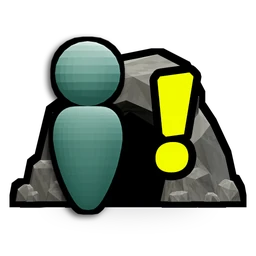
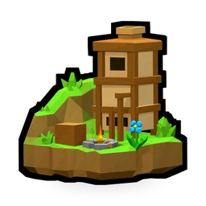
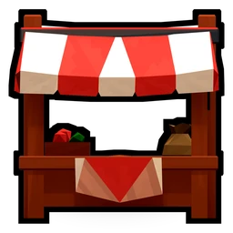
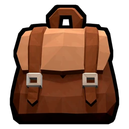

Welcome to the LDBG Wiki
Every enemy, item, place, quest and rule in LDBG, the falling-block RPG, written from the game's own data. When the game changes, these pages change with it.
 Enemies16 pages
Enemies16 pages
 Bosses14 pages
Bosses14 pages
 Items223 pages
Items223 pages
 Equipment86 pages
Equipment86 pages
 Locations14 pages
Locations14 pages

Quests93 pages
Quest lines17 pages
NPCs9 pages Shops and stations28 pages
Shops and stations28 pages
 Skills and atlases87 pages
Skills and atlases87 pages
 Feats and badges44 pages
Feats and badges44 pages
 Omens, champions and diaries76 pages
The Forge50 pages
Omens, champions and diaries76 pages
The Forge50 pages
 Activities10 pages
Activities10 pages

Lists8 pages Guides21 pages
Guides21 pages
Start here
- Controls and handling: the controls and handling.
- Activities: every way to play, from the Farm to Ranked.
- Quests and the townspeople who give them.
About this wiki
Pages are rebuilt from the game's content with every release: stats, drop rates, recipes, routes, quests and attacks are never typed by hand. Drops are listed with their odds even though the Collection Log keeps each one hidden in the game until you find it. Strategy, trivia and pictures are added by people, and a section still waiting for them says Not written yet.